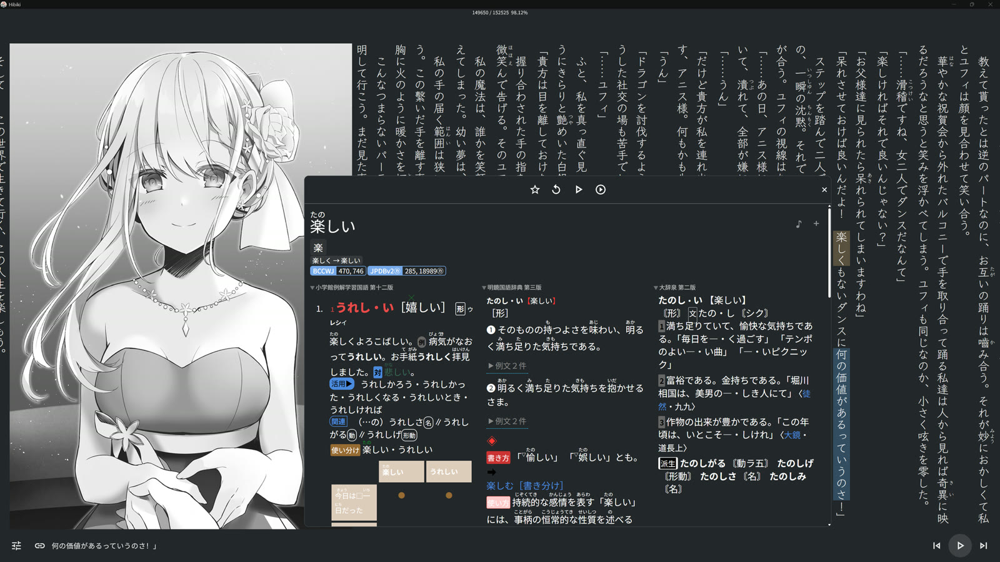
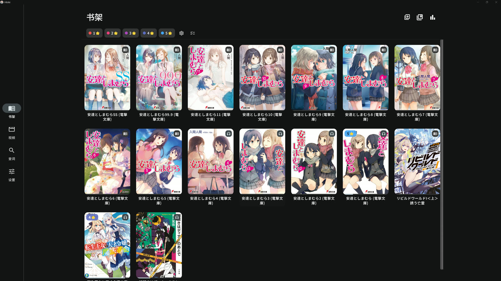
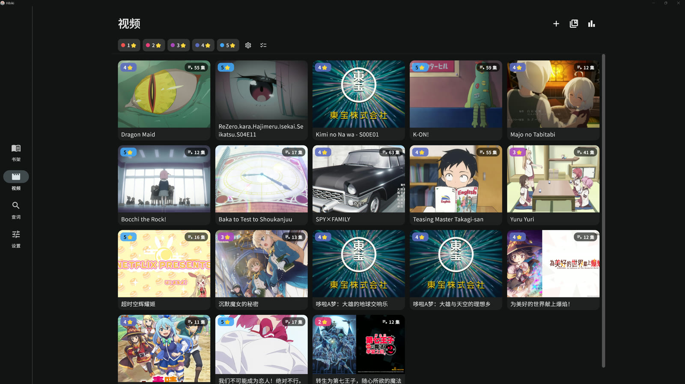
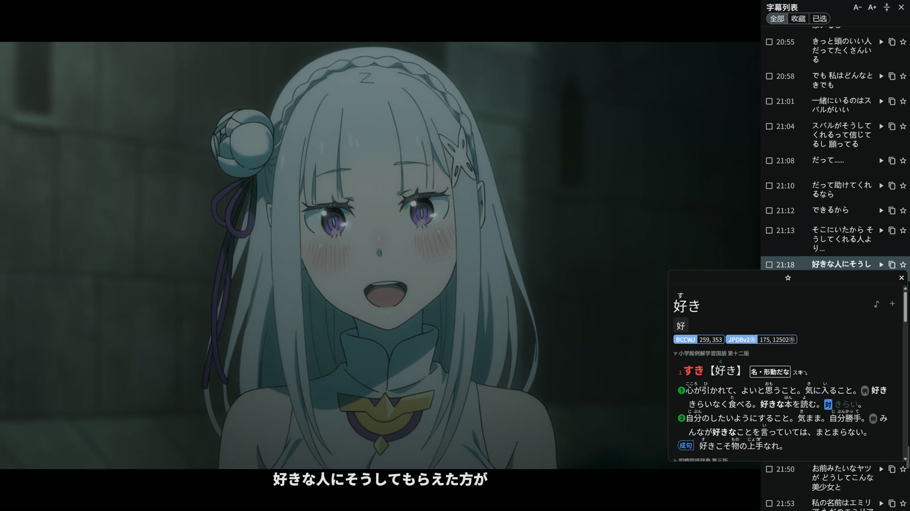
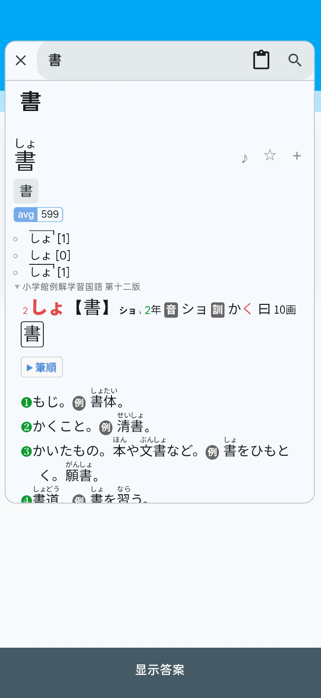
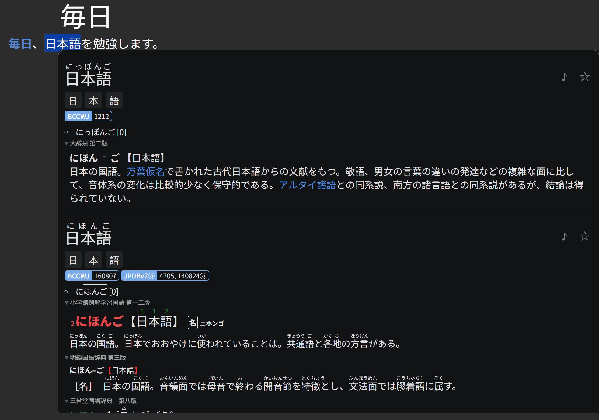
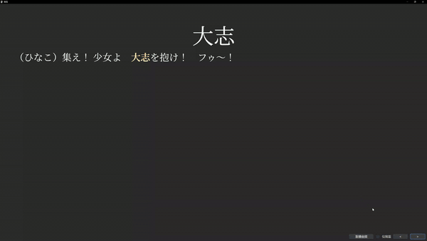

查词核心
导入 Yomitan / MDX / DSL / Migaku 词典；多词典并行查询，音调、词频标注，释义里的词可递归再查（嵌套弹窗）。变形还原覆盖全部 Yomitan 转换语言。
Fushi 把你读的小说、追的番剧、听的有声书变成语言输入——点一下查词，再点一下做成带原文语境的 Anki 卡。它不给你塞背词清单，只帮你抓住你真正读到、听到的词。

应用内搜番剧、下漫画，下载完自动进库，边下边看。
纵排横排、注音假名，点任意词当页查询不打断。
逐句高亮跟读，自动翻页，从这一句接着播。
视频字幕上直接查词制卡，追番本身就是输入。
查过的词一键送进 Anki，只复习真正遇见过的词。
所有场景共用同一套词典、统计与复习流。适合相信「大量输入 + 只做自己卡」的沉浸式学习者。
导入 Yomitan / MDX / DSL / Migaku 词典；多词典并行查询，音调、词频标注，释义里的词可递归再查（嵌套弹窗）。变形还原覆盖全部 Yomitan 转换语言。
经 AnkiDroid / AnkiConnect 一键制卡，内置 Lapis 笔记模板一键建牌组；自动填充语境句，支持录音与截图裁剪、多导出配置。
SRT / LRC / VTT / ASS 字幕自动对齐 EPUB 正文；播放时逐句高亮、自动翻页，任意句子起播、跨章无缝续播。
内置 libmpv 播放器，内嵌 + 外挂字幕、m3u8 导入；播放中在字幕上直接查词制卡，媒体库支持标签、系列分组与批量操作。
AniList / Nyaa 应用内搜索，单集、整季、整卷漫画一键下载自动入库，边下边看；订阅系列自动追更，内置 libtorrent，无需外部客户端。
页漫 / 条漫两种模式，直接在图上框词查询——内置 OCR 引擎，或接入你已有的 mokuro 流程。
Google Drive / OneDrive / Dropbox / WebDAV / FTP / SFTP / Fushi 互联（局域网设备直连，一台做主机、另一台远程读库，不经任何云账号）。
Hook 运行中的视觉小说，抓取当前句文本和原声语音一并做进卡片；独立游戏库与逐作统计。






Android 7.0（API 24）及以上。
含 Galgame 语音挖掘、桌面划词。
Apple Silicon 与 Intel 通用。
随版本发布提供。
Linux 暂无预编译包，可从源码构建。全部版本见 GitHub Releases。
装好 app → 一键导入推荐词典和发音音频 → 两步接上 Anki。没有繁琐设置，跟着教程点就行。